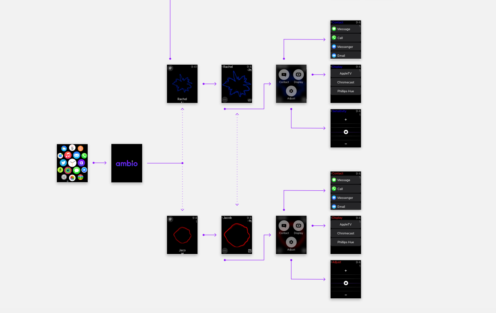
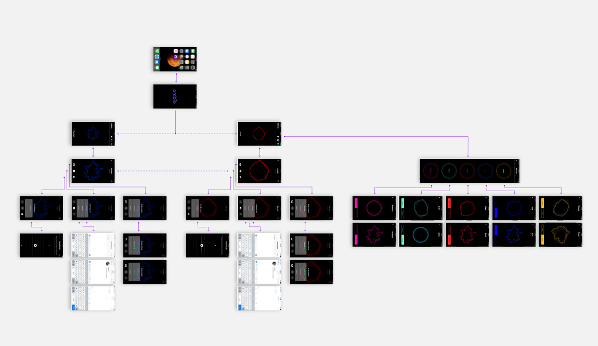

Server Upgrade and Apple Watch Dev
4.12.2017
This week our dev focused primarily on the development of Apple Watch connectivity.
All core features of the Ambio iOS application have been built. We are currently in the process of refining the navigation scheme and UI to better reflect Ambio's branding and aesthetic.
Our dev team also made a large server update this week. This update introduces a new mood analyzation process which provides a more accurate depiction of a users mood.

User Flow and Swift Development
3.26.2017
This week our dev team focused on the user interface of Ambio.
After numerous design explorations, our team has nailed down a solid user flow and aesthetic. The development team is now in the process of recreating these designs is Swift. Many of the core features like mood analyzation and partner tracking are already implemented.

Mood Ideation
3.16.2017
This week, our team solidified mood words and their sub-words. We then created associated graphics to display for each mood
We made sure to carefully take accessibility into account when choosing our colors. To accommodate users who experience colorblindness, we made sure each mood’s color distinctly contrasted from the next, to ensure that a user couldn’t misinterpret one mood as another.
Our Industrial Designer, Vincent, finalized our product design direction.
Finally, we finalized a branding direction by deciding on a logo, brand colors, and gradients.
Design Update
3.02.2017
These past two weeks, our design team solidified a design direction. First, we reviewed our collective moodboards and brainstormed keywords to adhere to throughout the continuation of our project: ambient, casual, seamless, trustworthy. We then conceptualized the first version of ambio’s main screen, which displays a partner user’s emotions. We’re establishing an organic and fluid look. The screen depicts the user’s emotions growing and flucuating over course of the day to emulate natural human emotions. In our interface, we’re emphasizing versatility and modifiability, as users are able to filter the intensity of their emotional display based on which partner user is viewing it.
Additionally, our Industrial Designer, Vincent, created prototypes of our unique ambio wearable device. After exploring iterations of more traditional wearable design, we moved toward an innovative and versatile product. Our focus is on the uniqueness of the ambio wearable, and that its sole purpose is to connect you with loved ones.


Developer Update #1: An Exploration of Verbal
2.20.2017
This week our dev team spent time researching the potential of vocal analysis. Vocal can be the sole indicator of someone's mood. However, the extraction and analyzation of vocal patterns is a complex process. Instead of reinventing the wheel, our development team is looking to leverage existing technologies to obtain consistent biometric readings. This will allow our team to focus on Ambio’s core “connectivity” features, while maintaining a trustworthy infrastructure of data.
After testing various products, our team has determined that the Beyond Verbal analysis software aligns best with Ambio’s scope and goals. Beyond Verbal is an API based software that analyzes emotions based on a user's vocal intonations. The API intakes an audio file, analyzes it, and returns a cohesive mood package based off of three indicators.
Temper (Emotion)
“Temper reflects a speaker’s temperament or emotional state ranging from gloomy or depressive at the low-end, embracive and friendly in the mid-range, and confrontational or aggressive at the high-end of the scale.”
Valence (Positivity)
“Continuous Scale ranging from 0 to 100, representing a valence shift from negative attitude at the lower part of the scale to a positive attitude at the higher part of the same scale.”
Arousal
“Arousal is an output that measures a speaker’s degree of energy ranging from tranquil, bored or sleepy to excited and highly energetic. Arousal can also correspond to similar concepts such as involvement and stimulation.”
Using the data received from Beyond Verbal, Ambio will construct a user profile that stores the mood of the wearer over time. This information will then be presented to tied users.
Team .init
2.14.2017
The Team
We are ambio. We’re comprised of three New Media Developers, four New Media Designers, and one Industrial Designer. Our diverse disciplines and combined talents allow us to be a more creative and dynamic team.
Connectin’ Homies
We’re connecting people in a natural way. Our dissatisfaction with the contrived nature of today’s digital communication drove us to innovate an ambient, instinctive method of sharing our emotions with the people we care about. With ambio, we begin by collecting a user’s biometric data through wearable technology. We then use that data to discern a user’s mood, and finally share that mood with their partner user/users. Ultimately, we’re going to make users feel as if they are physically with the ones they love.